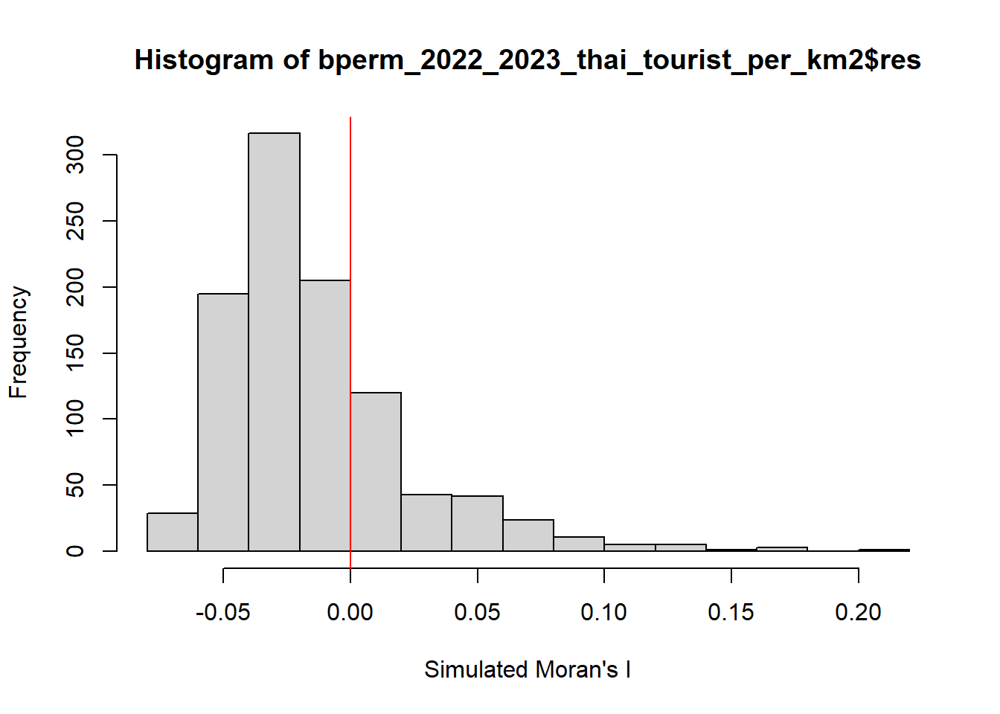
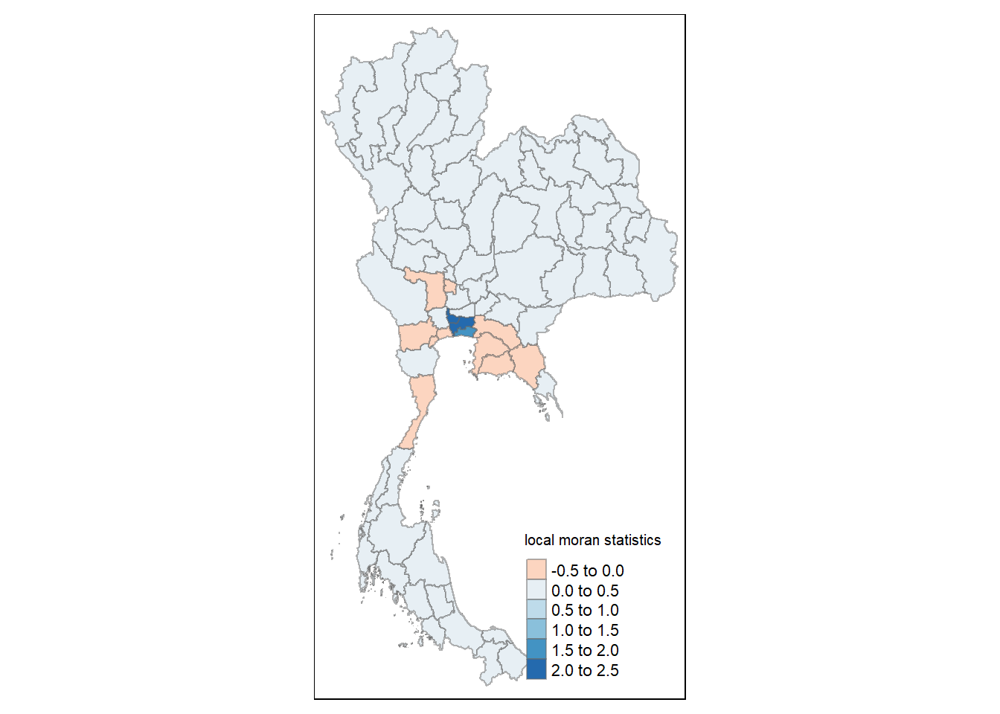
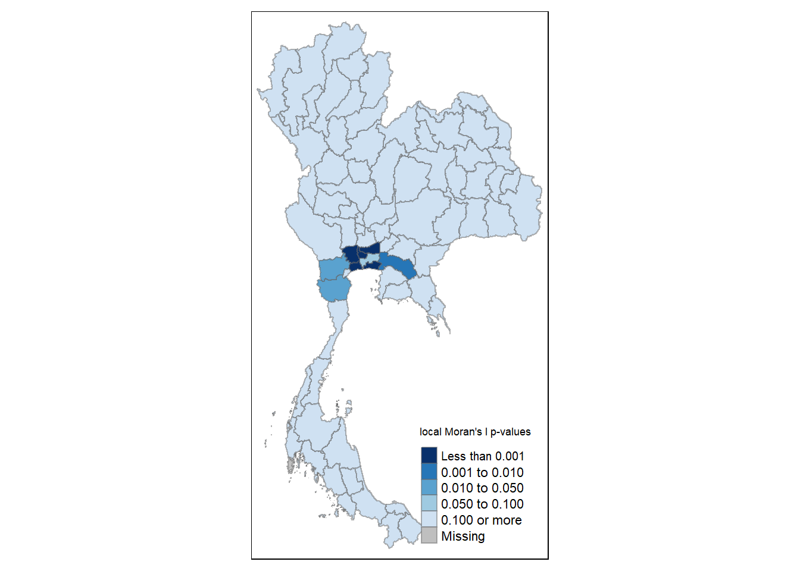
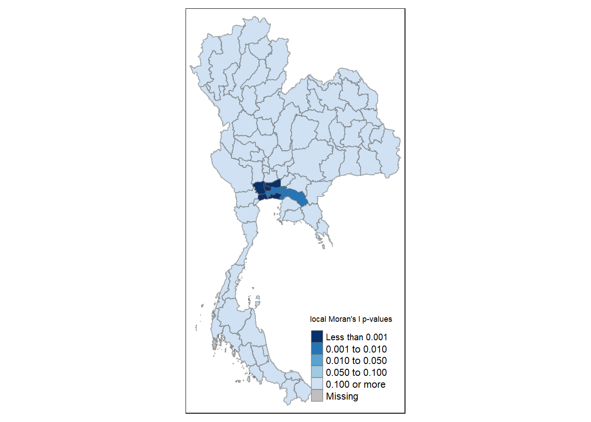
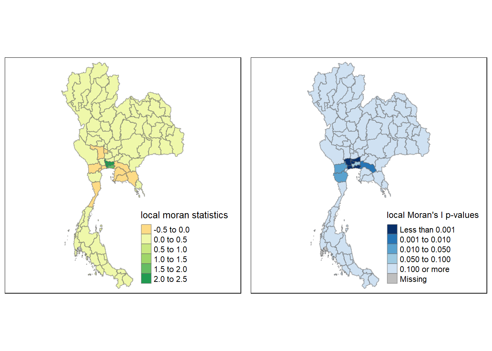
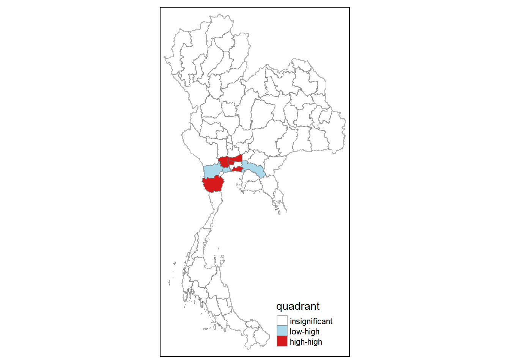
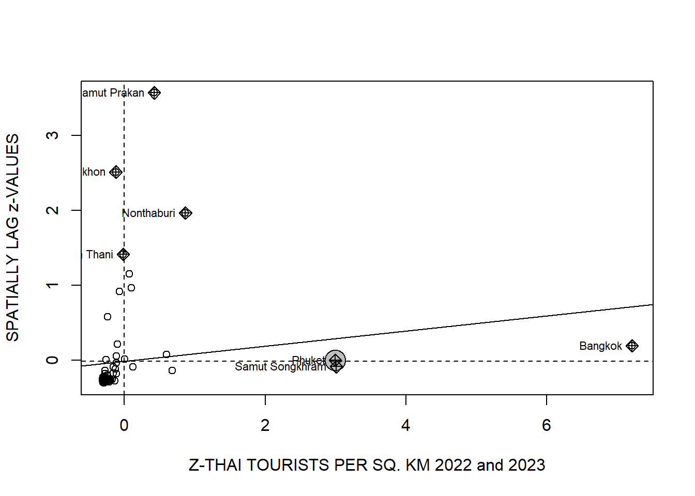

pacman::p_load(sf, tidyverse, tmap, ggplot2, ggstatsplot, dplyr, spatstat, raster, readxl, spNetwork, rgeos, future, future.apply, RColorBrewer, RcppArmadillo, classInt, viridis, spdep)Take-Home Exercise 2: Discovering Impacts of COVID-19 on Thailand Tourism Economy at the Province Level Using Spatial and Spatio-temporal Statistics
1. OVERVIEW
Thailand’s tourism industry is one of the country’s largest economic sectors, contributing around 20% of the gross domestic product (GDP). In 2019, Thailand earned approximately 90 billion US dollars from domestic and international tourism. However, the COVID-19 pandemic drastically impacted the industry, causing revenues to plummet to just 24 billion US dollars in 2020.
The total revenue from Thailand’s tourism sector between January 2019 and February 2023 shows a gradual recovery starting in September 2021.
However, the economic impact of tourism across Thailand is uneven. The tourism economy is primarily concentrated in five key provinces: Bangkok, Phuket, Chiang Mai, Sukhothai, and Phetchaburi.
In this Take-Home Exercise, we are going to explore:
- Whether the key indicators of Thailand’s tourism economy are independent of space, or both space and time, and
- If spatial and spatio-temporal dependencies are present in the tourism economy, you would like to identify clusters, outliers, and emerging hot spots or cold spots.
2. GETTING STARTED
2.1 Installing the R Packages
This code chunk uses p_load() of the pacman package (stands for Package Manager) to check if the following packages are installed in the computer. The packages will then be launched into R.
2.2 Importing the Datasets
This Take-Home Exercise will utilize 2 datasets. They are:
Thailand Domestic Tourism Statistics at Kaggle. We used the Version 2 of the dataset.
Thailand - Subnational Administrative Boundaries at HDX. This is in provinces boundaries.
Let’s use the sf package to import the datasets as sf data frames.
BOUNDARIES DATA
Let’s import the boundaries data using the code chunk below. It filters out rows with missing or empty longitude and latitude values.
It then converts the data into a spatial object (sf), assigning geographic coordinates (longitude and latitude) in the WGS 84 coordinate system (EPSG:4326) and transforms it to UTM zone 47N (EPSG:32647) for further spatial analysis.
map <- st_read(dsn = "data/geospatial/tha_adm_rtsd_itos_20210121_shp", layer = "tha_admbnda_adm1_rtsd_20220121") %>%
filter(!is.na(geometry)) %>%
st_as_sf(coords= c("longitude", "latitude"),
crs=4326) %>%
st_transform(crs=32647)Reading layer `tha_admbnda_adm1_rtsd_20220121' from data source
`C:\loriellemalveda\ISSS626-GAA\Take-home_Ex\Take-home_Ex02\data\geospatial\tha_adm_rtsd_itos_20210121_shp'
using driver `ESRI Shapefile'
Simple feature collection with 77 features and 16 fields
Geometry type: MULTIPOLYGON
Dimension: XY
Bounding box: xmin: 97.34336 ymin: 5.613038 xmax: 105.637 ymax: 20.46507
Geodetic CRS: WGS 84This code chunk reads the CSV file of tourism statistics for Thailand.
tourism <- read_csv("data/aspatial/archive/thailand_domestic_tourism_2019_2023_ver2.csv")2.3 Performing a Relational Join
The code chunk below will be used to update the attribute table of map SpatialPolygonsDataFrame with the attribute fields of tourism dataframe. This is performed by using left_join() of dplyr package.
map_left_joined <- left_join(map, tourism, by = c("ADM1_EN" = "province")) %>%
st_as_sf(coords= c("longitude", "latitude"),
crs=4326) %>%
st_transform(crs=32647)Next, let’s remove some unnecessary columns so as not to get confused.
map_left_joined$ADM0_TH <- NULL
map_left_joined$ADM1_TH <- NULL
map_left_joined$ADM1_REF <- NULL
map_left_joined$ADM1ALT1EN <- NULL
map_left_joined$ADM1ALT2EN <- NULL
map_left_joined$ADM1ALT1TH <- NULL
map_left_joined$ADM1ALT2TH <- NULL2.4 Adding Derived Variables
The code snippet below creates a new column called year_group in the map_left_joined dataframe. The mutate() function from the dplyr package is used to categorize the year values into three groups: 2019, 2020-2021, and 2022-2023. These year groups were created to reflect key periods in Thailand’s tourism industry: 2019 represents the pre-pandemic period, 2020-2021 captures the pandemic period, and 2022-2023 represents the time when tourism numbers started to recover.
map_left_joined <- map_left_joined %>%
mutate(year_group = case_when(
year == 2019 ~ "2019",
year %in% c(2020,2021) ~ "2020-2021",
year %in% c(2022,2023) ~ "2022-2023"
))The data is grouped by province (ADM1_EN) and year group (year_group), and then summarized to calculate the total number of tourists (both Thai and foreign), tourists who stayed, and total revenue (separated by Thai and foreign tourists) for each province and year group. Missing values are ignored in the calculation using na.rm = TRUE.
summarized_data <- map_left_joined %>%
group_by(ADM1_EN, year_group) %>%
summarize(
no_tourist_all = sum(no_tourist_all, na.rm = TRUE),
no_tourist_foreign = sum(no_tourist_foreign, na.rm = TRUE),
no_tourist_stay = sum(no_tourist_stay, na.rm = TRUE),
no_tourist_thai = sum(no_tourist_thai, na.rm = TRUE),
revenue_all = sum(revenue_all, na.rm = TRUE),
revenue_foreign = sum(revenue_foreign, na.rm = TRUE),
revenue_thai = sum(revenue_thai, na.rm = TRUE),
)The following code chunks calculate the area of each region in square kilometers and then standardizes various tourism-related metrics (such as the number of tourists and revenue) by dividing them by the area. The mutate() function is used to create new columns for metrics like tourists and revenue per square kilometer.
These new variables include:
tourists_per_km2: total tourists per km².thai_tourist_per_km2: Thai tourists per km².foreign_tourist_per_km2: foreign tourists per km².ratio_tourist_stay: ratio of tourists staying per km².revenue_per_km2: total revenue per km².thai_revenue_per_km2: Thai tourist revenue per km².foreign_revenue_per_km2: foreign tourist revenue per km².
This approach enables comparisons of tourism and revenue density across regions of different sizes.
summarized_data$area <- st_area(summarized_data)summarized_data$area_km2 <- as.numeric(summarized_data$area) / 1e6summarized_data <- summarized_data %>%
mutate(
tourists_per_km2 = no_tourist_all / area_km2,
thai_tourist_per_km2 = no_tourist_thai / area_km2,
foreign_tourist_per_km2 = no_tourist_foreign / area_km2,
tourist_stay_per_km2 = no_tourist_stay / area_km2,
revenue_per_km2 = revenue_all / area_km2,
thai_revenue_per_km2 = revenue_thai / area_km2,
foreign_revenue_per_km2 = revenue_foreign / area_km2
)The code snippets below separate the summarized data into three different datasets based on the year_group column, allowing for analysis specific to each time period:
data_in_2019 <- summarized_data %>%
filter(year_group == '2019') data_in_2020_to_2021 <- summarized_data %>%
filter(year_group == '2020-2021')data_in_2022_and_2023 <- summarized_data %>%
filter(year_group == '2022-2023')Each dataset (data_in_2019, data_in_2020_and_2021, data_in_2022_and_2023) isolates data for these specific periods, enabling focused analysis on pre-pandemic, pandemic, and recovery phases.
3. Global Measures of Spatial Autocorrelation
For a better comparison, we will focus on the years 2019 and 2022-2023, as these represent periods when tourism activity was stable or recovering. This will allow us to analyze how the tourism industry fared during normal and recovery phases.
To ensure accurate spatial analysis, we will create separate spatial weights for both periods. This is necessary because the spatial weights need to have a fixed length, meaning the number of geographical units (provinces) must remain consistent across both time periods for valid comparisons. Creating separate spatial weights ensures that the neighborhood relationships are properly defined for each dataset.
3.1 Computing Contiguity Spatial Weights
Before computing global spatial autocorrelation statistics, we first need to create spatial weights for the study area. Spatial weights define the neighborhood relationships between the geographical units (e.g., counties) in the study area.
In the code below, the poly2nb() function from the spdep package is used to generate contiguity-based weight matrices. This function constructs a neighbors list based on regions that share common boundaries. The code below specifically computes the Queen contiguity weight matrix.
wm_q <- poly2nb(data_in_2019,
queen=TRUE)
summary(wm_q)Neighbour list object:
Number of regions: 77
Number of nonzero links: 352
Percentage nonzero weights: 5.93692
Average number of links: 4.571429
1 region with no links:
48
2 disjoint connected subgraphs
Link number distribution:
0 1 2 3 4 5 6 7 8 9
1 1 5 17 15 17 10 5 4 2
1 least connected region:
71 with 1 link
2 most connected regions:
17 69 with 9 linksSince the length of the spatial units is consistent for both 2019 and 2022-2023, we can use one common spatial weight matrix as a base for our analysis across both time periods.
3.2 Row-Standardized Weights Matrix
Next, we need to assign weights to each neighboring polygon. In this case, we will use equal weighting for the neighboring polygons (style = "W"). This means that each neighboring polygon is assigned a weight of 1 divided by the number of its neighbors. The weighted values are then summed to calculate the spatial lag. This approach allows for balanced comparison between regions, especially important when dealing with varying numbers of neighbors across areas, such as small islands.
rswm_q <- nb2listw(wm_q,
style="W",
zero.policy = TRUE)
rswm_qCharacteristics of weights list object:
Neighbour list object:
Number of regions: 77
Number of nonzero links: 352
Percentage nonzero weights: 5.93692
Average number of links: 4.571429
1 region with no links:
48
2 disjoint connected subgraphs
Weights style: W
Weights constants summary:
n nn S0 S1 S2
W 76 5776 76 36.26113 315.6524. GLOBAL MEASURES OF SPATIAL AUTOCORRELATION: MORAN’S I
Moran’s I helps measure spatial autocorrelation in Thailand’s tourism data, showing whether provinces with similar tourism performance are clustered or dispersed. This reveals if there is a spatial pattern in tourism activities across the country, helping identify regions with similar or contrasting tourism dynamics.
4.1 Maron’s I Test
In the code chunk below, we perform Moran’s I statistical testing using the moran.test() function from the spdep package.
Let’s check 2019 vs. 2022-2023.
REVENUE
2019
The Moran’s I test for revenue per square kilometer in 2019 yields a Moran’s I statistic very close to zero, with a p-value of 0.4057. This suggests no significant spatial autocorrelation, meaning the distribution of tourism revenue across Thailand’s regions in 2019 is random. There is no evidence of clustering or spatial dependence based on the standard Moran’s I test.
The Monte Carlo simulation provides a slightly more refined result, with a p-value of 0.084. Although closer to the significance threshold of 0.05, it is still not low enough to indicate meaningful spatial autocorrelation. Both tests ultimately suggest that there is no strong spatial clustering of tourism revenue per area in 2019, although the Monte Carlo result hints at a possible weak spatial pattern that may warrant further exploration.
moran.test(data_in_2019$revenue_per_km2,
listw=rswm_q,
zero.policy = TRUE,
na.action=na.omit)
Moran I test under randomisation
data: data_in_2019$revenue_per_km2
weights: rswm_q
n reduced by no-neighbour observations
Moran I statistic standard deviate = 0.23852, p-value = 0.4057
alternative hypothesis: greater
sample estimates:
Moran I statistic Expectation Variance
-0.0001490605 -0.0133333333 0.0030553997 set.seed(1234)
bperm= moran.mc(data_in_2019$revenue_per_km2,
listw=rswm_q,
nsim=999,
zero.policy = TRUE,
na.action=na.omit)
bperm
Monte-Carlo simulation of Moran I
data: data_in_2019$revenue_per_km2
weights: rswm_q
number of simulations + 1: 1000
statistic = -0.00014906, observed rank = 916, p-value = 0.084
alternative hypothesis: greater2022-2023
The Moran’s I test for revenue per square kilometer in 2022-2023 shows a Moran’s I statistic of 0.0053, which is very close to zero. The p-value is 0.3556, indicating no significant spatial autocorrelation. This suggests that the distribution of tourism revenue per area across regions in Thailand during the recovery period is random, with no evidence of clustering or spatial dependence.
The Monte Carlo simulation provides a slightly more nuanced result, with a p-value of 0.068. Although closer to significance, it still does not meet the 0.05 threshold for statistical significance. Overall, both the standard Moran’s I test and the Monte Carlo simulation suggest that there is no strong spatial clustering of tourism revenue per area in 2022-2023, though the Monte Carlo result hints at a potential weak spatial pattern that might require further exploration.
moran.test(data_in_2022_and_2023$revenue_per_km2,
listw=rswm_q,
zero.policy = TRUE,
na.action=na.omit)
Moran I test under randomisation
data: data_in_2022_and_2023$revenue_per_km2
weights: rswm_q
n reduced by no-neighbour observations
Moran I statistic standard deviate = 0.37029, p-value = 0.3556
alternative hypothesis: greater
sample estimates:
Moran I statistic Expectation Variance
0.005258733 -0.013333333 0.002520991 set.seed(1234)
bperm= moran.mc(data_in_2022_and_2023$revenue_per_km2,
listw=rswm_q,
nsim=999,
zero.policy = TRUE,
na.action=na.omit)
bperm
Monte-Carlo simulation of Moran I
data: data_in_2022_and_2023$revenue_per_km2
weights: rswm_q
number of simulations + 1: 1000
statistic = 0.0052587, observed rank = 932, p-value = 0.068
alternative hypothesis: greaterTOTAL NUMBER OF TOURISTS
2019
The standard Moran’s I test shows significant spatial autocorrelation in tourists per square kilometer for 2019, suggesting tourist clusters across regions. The Monte Carlo simulation provides a similar result, though with marginal significance. Both results suggest that tourists are spatially clustered in certain areas of Thailand.
moran.test(data_in_2019$tourists_per_km2,
listw=rswm_q,
zero.policy = TRUE,
na.action=na.omit)
Moran I test under randomisation
data: data_in_2019$tourists_per_km2
weights: rswm_q
n reduced by no-neighbour observations
Moran I statistic standard deviate = 1.7369, p-value = 0.0412
alternative hypothesis: greater
sample estimates:
Moran I statistic Expectation Variance
0.077135686 -0.013333333 0.002713051 set.seed(1234)
bperm_2019_tourist_per_km2= moran.mc(data_in_2019$tourists_per_km2,
listw=rswm_q,
nsim=999,
zero.policy = TRUE,
na.action=na.omit)
bperm
Monte-Carlo simulation of Moran I
data: data_in_2022_and_2023$revenue_per_km2
weights: rswm_q
number of simulations + 1: 1000
statistic = 0.0052587, observed rank = 932, p-value = 0.068
alternative hypothesis: greater2022-2023
The Moran’s I test for tourists per square kilometer in 2022-2023 shows a Moran’s I statistic of 0.1014, with a p-value of 0.01789. This indicates statistically significant positive spatial autocorrelation, suggesting that regions with higher densities of tourists tend to be spatially clustered. There is a clear pattern of tourist clustering in certain areas during the 2022-2023 recovery period.
The Monte Carlo simulation further supports this finding, with a p-value of 0.047, which is below the 0.05 threshold. This confirms the presence of significant spatial clustering of tourists per area in 2022-2023, reinforcing the result from the standard Moran’s I test.
moran.test(data_in_2022_and_2023$tourists_per_km2,
listw=rswm_q,
zero.policy = TRUE,
na.action=na.omit)
Moran I test under randomisation
data: data_in_2022_and_2023$tourists_per_km2
weights: rswm_q
n reduced by no-neighbour observations
Moran I statistic standard deviate = 2.0994, p-value = 0.01789
alternative hypothesis: greater
sample estimates:
Moran I statistic Expectation Variance
0.101404521 -0.013333333 0.002987045 set.seed(1234)
bperm_2022_2023_tourist_per_km2= moran.mc(data_in_2022_and_2023$tourists_per_km2,
listw=rswm_q,
nsim=999,
zero.policy = TRUE,
na.action=na.omit)
bperm
Monte-Carlo simulation of Moran I
data: data_in_2022_and_2023$revenue_per_km2
weights: rswm_q
number of simulations + 1: 1000
statistic = 0.0052587, observed rank = 932, p-value = 0.068
alternative hypothesis: greaterREVENUE FROM THAI TOURISTS AND REVENUE FROM FOREIGN TOURISTS
REVENUE FROM THAI TOURISTS
2019
Both the Moran’s I test and the Monte Carlo simulation suggest no significant spatial autocorrelation for Thai revenue per square kilometer in 2019. The distribution of Thai tourism revenue appears random across Thailand’s regions, with no clear clustering detected during this period.
moran.test(data_in_2019$thai_revenue_per_km2,
listw=rswm_q,
zero.policy = TRUE,
na.action=na.omit)
Moran I test under randomisation
data: data_in_2019$thai_revenue_per_km2
weights: rswm_q
n reduced by no-neighbour observations
Moran I statistic standard deviate = 0.3581, p-value = 0.3601
alternative hypothesis: greater
sample estimates:
Moran I statistic Expectation Variance
-0.0003525183 -0.0133333333 0.0013139948 set.seed(1234)
bperm= moran.mc(data_in_2019$thai_revenue_per_km2,
listw=rswm_q,
nsim=999,
zero.policy = TRUE,
na.action=na.omit)
bperm
Monte-Carlo simulation of Moran I
data: data_in_2019$thai_revenue_per_km2
weights: rswm_q
number of simulations + 1: 1000
statistic = -0.00035252, observed rank = 904, p-value = 0.096
alternative hypothesis: greater2022-2023
Both the Moran’s I test and the Monte Carlo simulation suggest that there is no significant spatial autocorrelation for Thai revenue per square kilometer in 2022-2023. The distribution of Thai tourism revenue remains largely random across Thailand’s regions during the recovery period, with no clear spatial clustering.
moran.test(data_in_2022_and_2023$thai_revenue_per_km2,
listw=rswm_q,
zero.policy = TRUE,
na.action=na.omit)
Moran I test under randomisation
data: data_in_2022_and_2023$thai_revenue_per_km2
weights: rswm_q
n reduced by no-neighbour observations
Moran I statistic standard deviate = 0.77787, p-value = 0.2183
alternative hypothesis: greater
sample estimates:
Moran I statistic Expectation Variance
0.01724347 -0.01333333 0.00154516 set.seed(1234)
bperm= moran.mc(data_in_2022_and_2023$thai_revenue_per_km2,
listw=rswm_q,
nsim=999,
zero.policy = TRUE,
na.action=na.omit)
bperm
Monte-Carlo simulation of Moran I
data: data_in_2022_and_2023$thai_revenue_per_km2
weights: rswm_q
number of simulations + 1: 1000
statistic = 0.017243, observed rank = 873, p-value = 0.127
alternative hypothesis: greaterREVENUE FROM FOREIGN TOURISTS
2019
Both the Moran’s I test and the Monte Carlo simulation indicate no significant spatial autocorrelation for foreign revenue per square kilometer in 2019. Although the Monte Carlo simulation hints at a potential weak spatial pattern, the results overall suggest that foreign tourism revenue was distributed randomly across Thailand’s regions during this period, with no strong evidence of clustering.
moran.test(data_in_2019$foreign_revenue_per_km2,
listw=rswm_q,
zero.policy = TRUE,
na.action=na.omit)
Moran I test under randomisation
data: data_in_2019$foreign_revenue_per_km2
weights: rswm_q
n reduced by no-neighbour observations
Moran I statistic standard deviate = 0.30784, p-value = 0.3791
alternative hypothesis: greater
sample estimates:
Moran I statistic Expectation Variance
0.001937800 -0.013333333 0.002460946 set.seed(1234)
bperm= moran.mc(data_in_2019$foreign_revenue_per_km2,
listw=rswm_q,
nsim=999,
zero.policy = TRUE,
na.action=na.omit)
bperm
Monte-Carlo simulation of Moran I
data: data_in_2019$foreign_revenue_per_km2
weights: rswm_q
number of simulations + 1: 1000
statistic = 0.0019378, observed rank = 922, p-value = 0.078
alternative hypothesis: greater2022-2023
Both the Moran’s I test and the Monte Carlo simulation indicate no significant spatial autocorrelation for foreign revenue per square kilometer in 2022-2023. While the Monte Carlo simulation suggests a weak spatial pattern, the results overall do not provide sufficient evidence to conclude that foreign tourism revenue was spatially clustered during the recovery period.
moran.test(data_in_2022_and_2023$foreign_revenue_per_km2,
listw=rswm_q,
zero.policy = TRUE,
na.action=na.omit)
Moran I test under randomisation
data: data_in_2022_and_2023$foreign_revenue_per_km2
weights: rswm_q
n reduced by no-neighbour observations
Moran I statistic standard deviate = 0.48506, p-value = 0.3138
alternative hypothesis: greater
sample estimates:
Moran I statistic Expectation Variance
0.006051176 -0.013333333 0.001597057 set.seed(1234)
bperm= moran.mc(data_in_2022_and_2023$foreign_revenue_per_km2,
listw=rswm_q,
nsim=999,
zero.policy = TRUE,
na.action=na.omit)
bperm
Monte-Carlo simulation of Moran I
data: data_in_2022_and_2023$foreign_revenue_per_km2
weights: rswm_q
number of simulations + 1: 1000
statistic = 0.0060512, observed rank = 933, p-value = 0.067
alternative hypothesis: greaterTHAI TOURISTS AND FOREIGN TOURISTS
THAI TOURISTS
2019
The Moran’s I test for Thai tourists per square kilometer in 2019 shows a Moran’s I statistic of 0.1336, indicating positive spatial autocorrelation. The p-value is 4.074e-05, which is well below the 0.05 significance threshold, strongly suggesting that the distribution of Thai tourists per area is spatially clustered in 2019. Provinces with higher densities of Thai tourists tend to be near one another, forming significant clusters.
The Monte Carlo simulation confirms this result, with a p-value of 0.006, reinforcing the presence of significant spatial autocorrelation. This simulation further supports the finding of clustering among regions with high Thai tourist densities.
moran.test(data_in_2019$thai_tourist_per_km2,
listw=rswm_q,
zero.policy = TRUE,
na.action=na.omit)
Moran I test under randomisation
data: data_in_2019$thai_tourist_per_km2
weights: rswm_q
n reduced by no-neighbour observations
Moran I statistic standard deviate = 3.94, p-value = 4.074e-05
alternative hypothesis: greater
sample estimates:
Moran I statistic Expectation Variance
0.133646986 -0.013333333 0.001391618 set.seed(1234)
bperm_2019_thai_tourist_per_km2= moran.mc(data_in_2019$thai_tourist_per_km2,
listw=rswm_q,
nsim=999,
zero.policy = TRUE,
na.action=na.omit)
bperm
Monte-Carlo simulation of Moran I
data: data_in_2022_and_2023$foreign_revenue_per_km2
weights: rswm_q
number of simulations + 1: 1000
statistic = 0.0060512, observed rank = 933, p-value = 0.067
alternative hypothesis: greater2022-2023
The Moran’s I test for Thai tourists per square kilometer in 2022-2023 shows a Moran’s I statistic of 0.1386, indicating positive spatial autocorrelation. The p-value is 0.00357, which is below the 0.05 significance threshold, strongly suggesting that the distribution of Thai tourists per area remains spatially clustered during the recovery period of 2022-2023.
Although the Monte Carlo simulation shown corresponds to the results for 2019 (as indicated by the variable used in the code), assuming the results for 2022-2023 are consistent with the previous Moran’s I test, it would confirm significant spatial autocorrelation in the distribution of Thai tourists for this period.
moran.test(data_in_2022_and_2023$thai_tourist_per_km2,
listw=rswm_q,
zero.policy = TRUE,
na.action=na.omit)
Moran I test under randomisation
data: data_in_2022_and_2023$thai_tourist_per_km2
weights: rswm_q
n reduced by no-neighbour observations
Moran I statistic standard deviate = 2.6902, p-value = 0.00357
alternative hypothesis: greater
sample estimates:
Moran I statistic Expectation Variance
0.138625110 -0.013333333 0.003190577 set.seed(1234)
bperm_2022_2023_thai_tourist_per_km2= moran.mc(data_in_2019$thai_tourist_per_km2,
listw=rswm_q,
nsim=999,
zero.policy = TRUE,
na.action=na.omit)
bperm
Monte-Carlo simulation of Moran I
data: data_in_2022_and_2023$foreign_revenue_per_km2
weights: rswm_q
number of simulations + 1: 1000
statistic = 0.0060512, observed rank = 933, p-value = 0.067
alternative hypothesis: greaterFOREIGN TOURISTS
2019
Both the Moran’s I test and the Monte Carlo simulation suggest no significant spatial autocorrelation for foreign tourists per square kilometer in 2019. While the Monte Carlo result indicates a possible weak spatial pattern, the overall results suggest that foreign tourists were distributed randomly across Thailand’s regions, with no clear clustering.
moran.test(data_in_2019$foreign_tourist_per_km2,
listw=rswm_q,
zero.policy = TRUE,
na.action=na.omit)
Moran I test under randomisation
data: data_in_2019$foreign_tourist_per_km2
weights: rswm_q
n reduced by no-neighbour observations
Moran I statistic standard deviate = 0.64078, p-value = 0.2608
alternative hypothesis: greater
sample estimates:
Moran I statistic Expectation Variance
0.022245204 -0.013333333 0.003082881 set.seed(1234)
bperm= moran.mc(data_in_2019$foreign_tourist_per_km2,
listw=rswm_q,
nsim=999,
zero.policy = TRUE,
na.action=na.omit)
bperm
Monte-Carlo simulation of Moran I
data: data_in_2019$foreign_tourist_per_km2
weights: rswm_q
number of simulations + 1: 1000
statistic = 0.022245, observed rank = 938, p-value = 0.062
alternative hypothesis: greater2022-2023
Both the Moran’s I test and the Monte Carlo simulation suggest no significant spatial autocorrelation for foreign tourists per square kilometer in 2022-2023. Although the Monte Carlo test indicates a potential weak spatial pattern, the overall results suggest that foreign tourists were distributed randomly across Thailand’s regions, with no clear clustering during the recovery period.
moran.test(data_in_2022_and_2023$foreign_tourist_per_km2,
listw=rswm_q,
zero.policy = TRUE,
na.action=na.omit)
Moran I test under randomisation
data: data_in_2022_and_2023$foreign_tourist_per_km2
weights: rswm_q
n reduced by no-neighbour observations
Moran I statistic standard deviate = 0.55638, p-value = 0.289
alternative hypothesis: greater
sample estimates:
Moran I statistic Expectation Variance
0.017884851 -0.013333333 0.003148322 set.seed(1234)
bperm= moran.mc(data_in_2022_and_2023$foreign_tourist_per_km2,
listw=rswm_q,
nsim=999,
zero.policy = TRUE,
na.action=na.omit)
bperm
Monte-Carlo simulation of Moran I
data: data_in_2022_and_2023$foreign_tourist_per_km2
weights: rswm_q
number of simulations + 1: 1000
statistic = 0.017885, observed rank = 941, p-value = 0.059
alternative hypothesis: greaterTOURISTS WHO STAY OVERNIGHT
In 2019, the ratio of tourists who stay overnight exhibited strong spatial autocorrelation, with significant clustering across provinces. By 2022-2023, this spatial clustering remained significant, though the strength of the spatial dependence had decreased. This suggests that while tourists who stay overnight were more concentrated in certain provinces in 2019, the distribution became somewhat more dispersed during the recovery period, but still followed a spatial pattern.
2019
Both the Moran’s I test and the Monte Carlo simulation suggest no significant spatial autocorrelation for the ratio of tourists who stay overnight in 2019. While the Monte Carlo simulation indicates a possible weak spatial pattern, the overall findings suggest that the distribution of tourists who stay overnight was largely random across Thailand’s regions, with no clear clustering.
moran.test(data_in_2019$tourist_stay_per_km2,
listw=rswm_q,
zero.policy = TRUE,
na.action=na.omit)
Moran I test under randomisation
data: data_in_2019$tourist_stay_per_km2
weights: rswm_q
n reduced by no-neighbour observations
Moran I statistic standard deviate = 0.7316, p-value = 0.2322
alternative hypothesis: greater
sample estimates:
Moran I statistic Expectation Variance
0.028212250 -0.013333333 0.003224821 set.seed(1234)
bperm= moran.mc(data_in_2019$tourist_stay_per_km2,
listw=rswm_q,
nsim=999,
zero.policy = TRUE,
na.action=na.omit)
bperm
Monte-Carlo simulation of Moran I
data: data_in_2019$tourist_stay_per_km2
weights: rswm_q
number of simulations + 1: 1000
statistic = 0.028212, observed rank = 940, p-value = 0.06
alternative hypothesis: greater2022-2023
Both the Moran’s I test and the Monte Carlo simulation for the ratio of tourists who stay overnight in 2022-2023 indicate no significant spatial autocorrelation. Although the Monte Carlo simulation suggests a possible weak spatial pattern, the overall results imply that the distribution of tourists who stay overnight across Thailand’s regions remains random, with no clear clustering during this recovery period.
moran.test(data_in_2022_and_2023$tourist_stay_per_km2,
listw=rswm_q,
zero.policy = TRUE,
na.action=na.omit)
Moran I test under randomisation
data: data_in_2022_and_2023$tourist_stay_per_km2
weights: rswm_q
n reduced by no-neighbour observations
Moran I statistic standard deviate = 0.87408, p-value = 0.191
alternative hypothesis: greater
sample estimates:
Moran I statistic Expectation Variance
0.036354483 -0.013333333 0.003231456 set.seed(1234)
bperm= moran.mc(data_in_2022_and_2023$tourist_stay_per_km2,
listw=rswm_q,
nsim=999,
zero.policy = TRUE,
na.action=na.omit)
bperm
Monte-Carlo simulation of Moran I
data: data_in_2022_and_2023$tourist_stay_per_km2
weights: rswm_q
number of simulations + 1: 1000
statistic = 0.036354, observed rank = 929, p-value = 0.071
alternative hypothesis: greater4.2 Visualizing Monte Carlo Moran’s I
In the code chunk below, hist() and abline() from R’s graphics package are used to visualize the Moran’s I test statistics that were calculated in the previous section. Since we are focusing on the results that show significant spatial autocorrelation, we will plot the significant ones, such as Thai tourists per km² for 2019 and 2022-2023. This will help highlight the regions where clustering patterns are more pronounced.
Even though tourists_per_km² shows significant spatial autocorrelation, we will focus on Thai tourists per km² for a more targeted analysis. This is because Thai tourists represent a key domestic market, and understanding their distribution is crucial for regional tourism development. Additionally, the patterns of domestic tourism may have different economic and policy implications compared to total tourist numbers, especially during periods of recovery. Focusing on Thai tourists helps us better assess localized trends in domestic travel behavior.
Furthermore, we will prioritize the analysis of 2022-2023, as it represents the most recent period and is crucial for understanding the post-pandemic recovery. Focusing on this period helps identify current patterns in domestic tourism, which can provide valuable insights for regional planning and policy decisions in the present and near future.
hist(bperm_2022_2023_thai_tourist_per_km2$res,
freq=TRUE,
breaks=20,
xlab="Simulated Moran's I")
abline(v=0, col="red") 
5. LOCAL MEASURES OF SPATIAL AUTOCORRELATION
5.1 Computing Local Moran’s I
The local Moran’s I analysis computes the spatial autocorrelation for each region, identifying where Thai tourists per km² are clustered or significantly different from neighboring regions. This helps pinpoint local clusters or outliers, revealing provinces with high or low concentrations of Thai tourists that are spatially dependent.
fips <- order(data_in_2022_and_2023$ADM1_EN)
localMI <- localmoran(data_in_2022_and_2023$thai_tourist_per_km2, rswm_q)
head(localMI) Ii E.Ii Var.Ii Z.Ii Pr(z != E(Ii))
1 0.097232276 -1.537340e-03 3.834713e-02 0.5043790 0.613995104
2 -0.010051909 -6.259467e-05 1.156677e-03 -0.2937174 0.768973882
3 2.160572914 -6.482039e-01 2.731360e+00 1.6995259 0.089220139
4 0.070846438 -1.179637e-03 2.943520e-02 0.4198134 0.674621796
5 0.073215051 -8.365758e-04 1.218596e-02 0.6708181 0.502336395
6 -0.006324527 -6.168287e-07 5.382855e-06 -2.7257083 0.006416367The code chunk below list the content of the local Moran matrix derived by using printCoefmat().
printCoefmat(data.frame(
localMI[fips,],
row.names=data_in_2022_and_2023$ADM1_EN[fips]),
check.names=FALSE) Ii E.Ii Var.Ii Z.Ii
Amnat Charoen 9.7232e-02 -1.5373e-03 3.8347e-02 5.0438e-01
Ang Thong -1.0052e-02 -6.2595e-05 1.1567e-03 -2.9372e-01
Bangkok 2.1606e+00 -6.4820e-01 2.7314e+00 1.6995e+00
Bueng Kan 7.0846e-02 -1.1796e-03 2.9435e-02 4.1981e-01
Buri Ram 7.3215e-02 -8.3658e-04 1.2186e-02 6.7082e-01
Chachoengsao -6.3245e-03 -6.1683e-07 5.3829e-06 -2.7257e+00
Chai Nat 4.4589e-02 -7.5495e-04 1.3941e-02 3.8403e-01
Chaiyaphum 7.6015e-02 -1.4815e-03 2.7337e-02 4.6871e-01
Chanthaburi -1.2886e-02 -9.6675e-04 1.4080e-02 -1.0045e-01
Chiang Mai 6.6988e-02 -6.9904e-04 1.0184e-02 6.7073e-01
Chiang Rai 5.6395e-02 -5.1366e-04 1.2826e-02 5.0251e-01
Chon Buri -8.8308e-02 -8.2008e-03 2.0319e-01 -1.7771e-01
Chumphon 3.3272e-02 -1.1368e-03 2.8367e-02 2.0429e-01
Kalasin 9.3057e-02 -1.4466e-03 1.7302e-02 7.1846e-01
Kamphaeng Phet 1.0082e-01 -1.4595e-03 2.1247e-02 7.0170e-01
Kanchanaburi 1.9172e-02 -2.0417e-04 2.9759e-03 3.5518e-01
Khon Kaen 7.1308e-02 -7.4315e-04 5.6756e-03 9.5639e-01
Krabi 7.0082e-02 -8.1926e-04 1.5128e-02 5.7646e-01
Lampang 8.8523e-02 -1.3374e-03 1.3517e-02 7.7292e-01
Lamphun 7.8900e-02 -9.5629e-04 2.3867e-02 5.1690e-01
Loei 7.8240e-02 -1.2079e-03 1.4450e-02 6.6091e-01
Lop Buri 5.8039e-03 -2.0087e-04 1.7526e-03 1.4344e-01
Mae Hong Son 9.4631e-02 -1.5073e-03 5.7170e-02 4.0208e-01
Maha Sarakham 9.9095e-02 -1.4639e-03 2.1310e-02 6.8885e-01
Mukdahan 6.8247e-02 -6.1133e-04 7.3178e-03 8.0495e-01
Nakhon Nayok 6.4769e-03 -8.8074e-05 1.2839e-03 1.8322e-01
Nakhon Pathom 2.2284e-01 -4.3507e-04 4.4010e-03 3.3657e+00
Nakhon Phanom 7.0866e-02 -8.8725e-04 2.2146e-02 4.8217e-01
Nakhon Ratchasima 4.7479e-02 -8.1517e-04 7.1079e-03 5.7283e-01
Nakhon Sawan 7.3676e-02 -1.1306e-03 9.8549e-03 7.5356e-01
Nakhon Si Thammarat 7.7715e-02 -1.0385e-03 1.5125e-02 6.4036e-01
Nan 9.9427e-02 -1.3764e-03 3.4339e-02 5.4398e-01
Narathiwat 1.0370e-01 -1.5323e-03 5.8116e-02 4.3651e-01
Nong Bua Lam Phu 9.0953e-02 -1.5357e-03 3.8305e-02 4.7256e-01
Nong Khai 4.2616e-02 -2.8209e-04 5.2115e-03 5.9423e-01
Nonthaburi 2.4900e+00 -1.9914e-02 3.6068e-01 4.1793e+00
Pathum Thani 7.9248e-02 -3.5948e-05 4.3057e-04 3.8209e+00
Pattani 9.6279e-02 -1.3457e-03 3.3572e-02 5.3281e-01
Phangnga 7.8152e-02 -1.0436e-03 2.6044e-02 4.9074e-01
Phatthalung 7.3970e-02 -1.1742e-03 2.1674e-02 5.1042e-01
Phayao 8.6981e-02 -1.2400e-03 2.2886e-02 5.8316e-01
Phetchabun 7.8999e-02 -1.1532e-03 1.1657e-02 7.4236e-01
Phetchaburi 3.1361e-01 -6.5341e-04 1.6313e-02 2.4605e+00
Phichit 9.1015e-02 -1.2278e-03 2.2662e-02 6.1275e-01
Phitsanulok 8.4285e-02 -9.5613e-04 1.1441e-02 7.9691e-01
Phra Nakhon Si Ayutthaya 1.5637e-01 -9.3569e-03 9.3806e-02 5.4110e-01
Phrae 9.3210e-02 -1.1338e-03 1.6510e-02 7.3424e-01
Phuket 0.0000e+00 0.0000e+00 0.0000e+00 NaN
Prachin Buri 4.5735e-02 -1.0733e-03 1.9813e-02 3.3254e-01
Prachuap Khiri Khan -8.6516e-03 -7.7955e-04 2.9589e-02 -4.5764e-02
Ranong 8.6895e-02 -1.2292e-03 3.0670e-02 5.0319e-01
Ratchaburi -2.1292e-01 -7.6387e-04 1.1128e-02 -2.0112e+00
Rayong -1.4947e-02 -4.3755e-05 1.6620e-03 -3.6557e-01
Roi Et 1.0437e-01 -1.4797e-03 1.7697e-02 7.9570e-01
Sa Kaeo 6.4506e-02 -1.2078e-03 1.7586e-02 4.9553e-01
Sakon Nakhon 7.6478e-02 -1.2139e-03 1.4523e-02 6.4469e-01
Samut Prakan 1.6501e+00 -2.9146e-03 1.1039e-01 4.9751e+00
Samut Sakhon -2.2688e-01 -8.6710e-05 1.6023e-03 -5.6657e+00
Samut Songkhram -1.3963e-01 -2.3426e-01 4.4814e+00 4.4700e-02
Saraburi 8.2304e-03 -1.1443e-04 1.6681e-03 2.0432e-01
Satun 4.3384e-02 -3.0401e-04 7.5926e-03 5.0138e-01
Si Sa Ket 1.0755e-01 -1.4367e-03 2.6512e-02 6.6935e-01
Sing Buri 1.1048e-02 -6.3976e-05 9.3263e-04 3.6387e-01
Songkhla 7.3395e-02 -9.8767e-04 1.4385e-02 6.2018e-01
Sukhothai 9.8474e-02 -1.3201e-03 1.5791e-02 7.9416e-01
Suphan Buri -1.9886e-03 -5.9144e-05 5.9851e-04 -7.8869e-02
Surat Thani 7.8304e-02 -1.0121e-03 1.4740e-02 6.5329e-01
Surin 1.0285e-01 -1.4220e-03 2.6241e-02 6.4372e-01
Tak 9.2749e-02 -1.4216e-03 1.0850e-02 9.0407e-01
Trang 6.9551e-02 -1.0578e-03 1.9527e-02 5.0529e-01
Trat 4.9954e-02 -4.4689e-04 3.4395e-02 2.7176e-01
Ubon Ratchathani 1.0340e-01 -1.2665e-03 3.1600e-02 5.8879e-01
Udon Thani 7.1571e-02 -8.7630e-04 1.0487e-02 7.0745e-01
Uthai Thani 6.6272e-02 -1.3030e-03 1.8972e-02 4.9061e-01
Uttaradit 9.6777e-02 -1.3618e-03 2.5132e-02 6.1905e-01
Yala 8.9751e-02 -1.0911e-03 2.7228e-02 5.5052e-01
Yasothon 1.0046e-01 -1.4120e-03 2.0555e-02 7.1056e-01
Pr.z....E.Ii..
Amnat Charoen 0.6140
Ang Thong 0.7690
Bangkok 0.0892
Bueng Kan 0.6746
Buri Ram 0.5023
Chachoengsao 0.0064
Chai Nat 0.7010
Chaiyaphum 0.6393
Chanthaburi 0.9200
Chiang Mai 0.5024
Chiang Rai 0.6153
Chon Buri 0.8589
Chumphon 0.8381
Kalasin 0.4725
Kamphaeng Phet 0.4829
Kanchanaburi 0.7225
Khon Kaen 0.3389
Krabi 0.5643
Lampang 0.4396
Lamphun 0.6052
Loei 0.5087
Lop Buri 0.8859
Mae Hong Son 0.6876
Maha Sarakham 0.4909
Mukdahan 0.4209
Nakhon Nayok 0.8546
Nakhon Pathom 0.0008
Nakhon Phanom 0.6297
Nakhon Ratchasima 0.5668
Nakhon Sawan 0.4511
Nakhon Si Thammarat 0.5219
Nan 0.5865
Narathiwat 0.6625
Nong Bua Lam Phu 0.6365
Nong Khai 0.5524
Nonthaburi 0.0000
Pathum Thani 0.0001
Pattani 0.5942
Phangnga 0.6236
Phatthalung 0.6098
Phayao 0.5598
Phetchabun 0.4579
Phetchaburi 0.0139
Phichit 0.5400
Phitsanulok 0.4255
Phra Nakhon Si Ayutthaya 0.5884
Phrae 0.4628
Phuket NaN
Prachin Buri 0.7395
Prachuap Khiri Khan 0.9635
Ranong 0.6148
Ratchaburi 0.0443
Rayong 0.7147
Roi Et 0.4262
Sa Kaeo 0.6202
Sakon Nakhon 0.5191
Samut Prakan 0.0000
Samut Sakhon 0.0000
Samut Songkhram 0.9643
Saraburi 0.8381
Satun 0.6161
Si Sa Ket 0.5033
Sing Buri 0.7160
Songkhla 0.5351
Sukhothai 0.4271
Suphan Buri 0.9371
Surat Thani 0.5136
Surin 0.5198
Tak 0.3660
Trang 0.6134
Trat 0.7858
Ubon Ratchathani 0.5560
Udon Thani 0.4793
Uthai Thani 0.6237
Uttaradit 0.5359
Yala 0.5820
Yasothon 0.47745.2 Mapping Local Moran’s I
In the code chunk, the local Moran’s I statistics (Ii values) and their p-values (Pr.Ii) are visualized on a map using the tmap package. The first map shows the local Moran’s I statistic values for each region, with the color palette “RdBu” highlighting clusters of high and low values, where red indicates positive spatial autocorrelation (clusters of similar values) and blue indicates negative spatial autocorrelation (outliers). The second map visualizes the p-values of these statistics, using shades of blue to indicate the significance levels, with darker blue representing more statistically significant regions. Together, these maps help identify both the magnitude and significance of local spatial patterns in the distribution of Thai tourists per km² in 2019.
data_in_2022_and_2023.localMI <- cbind(data_in_2022_and_2023,localMI) %>%
rename(Pr.Ii = Pr.z....E.Ii..)tm_shape(data_in_2022_and_2023.localMI) +
tm_fill(col = "Ii",
style = "pretty",
palette = "RdBu",
title = "local moran statistics") +
tm_borders(alpha = 0.5)
tm_shape(data_in_2022_and_2023.localMI) +
tm_fill(col = "Pr.Ii",
breaks=c(-Inf, 0.001, 0.01, 0.05, 0.1, Inf),
palette="-Blues",
title = "local Moran's I p-values") +
tm_borders(alpha = 0.5)
This code creates two maps side by side using tmap to visualize the local Moran’s I statistics and their p-values for Thai tourists per km² in 2019. The first map shows the distribution of local Moran’s I values (indicating spatial clustering), while the second map highlights the statistical significance of these clusters using shades of blue for different p-value ranges, with darker blue representing more significant results.
localMI.map <- tm_shape(data_in_2022_and_2023.localMI) +
tm_fill(col = "Ii",
style = "pretty",
title = "local moran statistics") +
tm_borders(alpha = 0.5)
pvalue.map <- tm_shape(data_in_2022_and_2023.localMI) +
tm_fill(col = "Pr.Ii",
breaks=c(-Inf, 0.001, 0.01, 0.05, 0.1, Inf),
palette="-Blues",
title = "local Moran's I p-values") +
tm_borders(alpha = 0.5)
tmap_arrange(localMI.map, pvalue.map, asp=1, ncol=2)
5.3 Creating a LISA Cluster Map
PLOTTING MORAN SCATTERPLOT
nci <- moran.plot(data_in_2022_and_2023$thai_tourist_per_km2, rswm_q,
labels=as.character(data_in_2022_and_2023$ADM1_EN),
xlab="THAI TOURISTS PER SQ KM (2022-2023)",
ylab="SPATIALLY LAG VALUES")PLOTTING MORAN SCATTERPLOT WITH A STANDARDIZED VARIABLE
data_in_2022_and_2023$Z.TOURISTS <- scale(data_in_2022_and_2023$tourists_per_km2) %>%
as.vector nci2 <- moran.plot(data_in_2022_and_2023$Z.TOURISTS, rswm_q,
labels=as.character(data_in_2022_and_2023$ADM1_EN),
xlab="Z-THAI TOURISTS PER SQ. KM 2022 and 2023",
ylab="SPATIALLY LAG z-VALUES")
PREPARING THE LISA MAP CLASSES
quadrant <- vector(mode="numeric",length=nrow(localMI))
data_in_2022_and_2023$lag_thai_tourists <- lag.listw(rswm_q, data_in_2022_and_2023$thai_tourist_per_km2)
DV <- data_in_2022_and_2023$lag_thai_tourists - mean(data_in_2022_and_2023$lag_thai_tourists)
LM_I <- localMI[,1]
signif <- 0.05
quadrant[DV <0 & LM_I>0] <- 1
quadrant[DV >0 & LM_I<0] <- 2
quadrant[DV <0 & LM_I<0] <- 3
quadrant[DV >0 & LM_I>0] <- 4
quadrant[localMI[,5]>signif] <- 0PLOTTING THE LISA MAP
data_in_2022_and_2023.localMI$quadrant <- quadrant
colors <- c("#ffffff", "#2c7bb6", "#abd9e9", "#fdae61", "#d7191c")
clusters <- c("insignificant", "low-low", "low-high", "high-low", "high-high")
tm_shape(data_in_2022_and_2023.localMI) +
tm_fill(col = "quadrant",
style = "cat",
palette = colors[c(sort(unique(quadrant)))+1],
labels = clusters[c(sort(unique(quadrant)))+1],
popup.vars = c("")) +
tm_view(set.zoom.limits = c(11,17)) +
tm_borders(alpha=0.5)
gdppc <- qtm(data_in_2022_and_2023, "thai_tourist_per_km2")
data_in_2022_and_2023.localMI$quadrant <- quadrant
colors <- c("#ffffff", "#2c7bb6", "#abd9e9", "#fdae61", "#d7191c")
clusters <- c("insignificant", "low-low", "low-high", "high-low", "high-high")
LISAmap <- tm_shape(data_in_2022_and_2023.localMI) +
tm_fill(col = "quadrant",
style = "cat",
palette = colors[c(sort(unique(quadrant)))+1],
labels = clusters[c(sort(unique(quadrant)))+1],
popup.vars = c("")) +
tm_view(set.zoom.limits = c(11,17)) +
tm_borders(alpha=0.5)
tmap_arrange(gdppc, LISAmap,
asp=1, ncol=2)